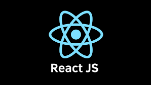
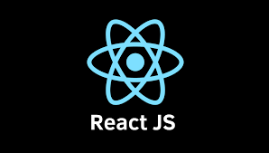

8341019807
8341019807 1930427@upv.edu.mx
1930427@upv.edu.mxArquitectura cliente-servidor
En simples palabras, son dos computadoras: El cliente pide la información, que son las peticiones y el servidor la devuelve, siempre y cuando exista el permiso.
Cliente: Programa ejecutable que participa activamente en el establecimiento de las conexiones. Envía una petición al servidor y se queda esperando por una respuesta. Su tiempo de vida es finito una vez que son servidas sus solicitudes, termina el trabajo.
Servidor: Es un programa que ofrece un servicio que se puede obtener en una red. Acepta la petición desde la red, realiza el servicio y devuelve el resultado al solicitante.
Evolución del Cliente-Servidor

Anteriormente solo ocupabas saber PHP, ya que creabas aquí prácticamente todo, no existía una división entre el Backend y frontend.
Alrededor de 2008 y 2010, se empezó la división entre backend y frontend debido a la llegada de HTML5, ya que permitió la llegada de más navegadores y consigo la tecnología web creció, además de etiquetas también llegaron APIs dando potencia al Cliente y servidor. El cliente antes de esto solo se podía visualizar las páginas web, no era posible que el cliente pudiese interactuar con ella.
Frontend

Es la programación con el cliente. En términos simples es lo que vemos en una pantalla, desde la estructura del sitio hasta los estilos como colores, fondos, tamaños hasta llegar a las animaciones y efectos.
Roles del Frontend
- Diseñador UI: Se encarga de diseñar la interfaz en un programa de diseño.
- Maquetador: Se encarga de llevar el diseño a HTML y a css.
- FrontEnd: Agrega toda la lógica y agrega datos reales desde una API.
Principales lenguajes y Frameworks usados en el Front-End
- JavaScript
- Angular
- React.js
- Vue.js
- Html
- css
 



Backend

Es la programación con el servidor. Es el encargado de la lógica del negocio, es decir, todas las funciones que ocupará tu cliente. Siendo necesario saber crear API, ya que el frontend consumo la API y el Backend debe crearla, además aquí se conecta a una base de datos y tú decides qué datos exponer para que el frontend pueda consumir.
Roles del Backend
- Backend: Se encarga de la lógica del negocio del lado del servidor, es decir las soluciones que necesita la aplicación y crea las APIs para que el frontend pueda consumirlas.
- Administrador de base de datos: Diseña, implementa, mejora y mantiene el sistema de base de datos.
- Cloud computing. Gestiona la instalación, soporte y mantiene el servidor en donde se aloja la web o app.
- Go.
- Java
- PHP
- Python
Stack
Es una pila de tecnologías que se utiliza para desarrollar una aplicación, software, etc.
Un programador "stack" al que hace backend y frontend
Ejemplo
Stack Lamp
- Linux. Como sistema operativo del servidor
- Apache. Como servidor web
- MySQL. Como base de datos
- PHP. Como lenguaje de programación